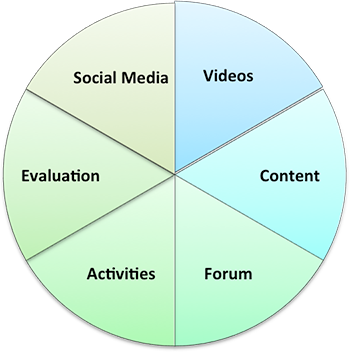

<div ng-if="!courseDetail" class="text-center centerSpinner">
    <span  >
        <i class="fa fa-spinner fa-pulse fa-5x"></i>
    </span>
</div>
<div id="mainbody" ng-if="!!courseDetail">
    <div id="leftBody" class="box">
        
        <br/><br/>
        <ul class="uniquefont">
            <li ng-repeat="(key,value) in mainMap track by $index" ng-click="goToSingleView(value.page)"
                class="palm-cursor"><a class="hvr-underline-from-left removedefaulthyper"
                                       uib-tooltip="{{value.page|superTooltip}}"
                                       tooltip-placement="right">{{key|capitalize}}</a></li>
        </ul>
        <p>&nbsp;</p>

        <p>&nbsp;</p>
    </div>
    <div id="rightBody" mooc-pie>
        <!--FIXME Bring this back when solve  the tooltip issue on the pie -->
        <!--<p>-->
        <!--
        <!--src="https://googledrive.com/host/0B8KqLaP_s06IYzdzRWg0MTR1a0k/reportpie2.png" border="0"-->
        <!--width="350" height="352" orgWidth="350" orgHeight="352" usemap="#image-maps-2015-06-03-033723"-->
        <!--alt="" mooc-map class="centerElement"/>-->
        <!--<map name="image-maps-2015-06-03-033723" id="ImageMapsCom-image-maps-2015-06-03-033723">-->
        <!--<area shape="rect" coords="348,350,350,352" alt="Image Map"-->
        <!--title="Image Map"/>-->
        <!--<area alt="Content" title="Content" id="dom_content" shape="poly"-->
        <!--coords="321,90,175,173,323,261,347,176" ng-click="goToSingleView(domMap['content'].page)"-->
        <!--uib-tooltip="{{domMap['content'].page|superTooltip}}"/>-->
        <!--<area alt="Videos" title="Videos" id="dom_videos" shape="poly"-->
        <!--coords="174,1,174,173,322,88,263,24" ng-click="goToSingleView(domMap['videos'].page)"-->
        <!--uib-tooltip="{{domMap['videos'].page|superTooltip}}"/>-->
        <!--<area alt="Discussion" title="Discussion" id="dom_forums" shape="poly"-->
        <!--coords="324,260,176,177,174,346,265,323" ng-click="goToSingleView(domMap['forum'].page)"-->
        <!--uib-tooltip="{{domMap['forum'].page|superTooltip}}"/>-->
        <!--<area alt="Social Media" title="Social Media" id="dom_social" shape="poly"-->
        <!--coords="174,1,174,174,25,89,81,27" ng-click="goToSingleView(domMap['social media'].page)"-->
        <!--uib-tooltip="{{domMap['social media'].page|superTooltip}}">-->
        <!--<area alt="Evaluation" title="Evaluation" id="dom_evaluation" shape="poly"-->
        <!--coords="174,176,24,89,4,173,25,261" ng-click="goToSingleView(domMap['evaluation'].page)"-->
        <!--uib-tooltip="{{domMap['evaluation'].page|superTooltip}}"/>-->
        <!--<area alt="Activities" title="Activities" id="dom_activity" shape="poly"-->
        <!--coords="175,347,175,175,25,261,76,318" ng-click="goToSingleView(domMap['activities'].page)"-->
        <!--uib-tooltip="{{domMap['activities'].page|superTooltip}}"/>-->
        <!--</map>-->
        <!--</p>-->

        <p>
            
            <map name="image-maps-2015-06-03-033723" id="ImageMapsCom-image-maps-2015-06-03-033723">
                <area shape="rect" coords="348,350,350,352" alt="Image Map"
                      title="Image Map"/>
                <area alt="Content" title="Content" id="dom_content" shape="poly"
                      coords="321,90,175,173,323,261,347,176" ng-click="goToSingleView(domMap['content'].page)"
                        />
                <area alt="Videos" title="Videos" id="dom_videos" shape="poly"
                      coords="174,1,174,173,322,88,263,24" ng-click="goToSingleView(domMap['videos'].page)"
                        />
                <area alt="Discussion" title="Discussion" id="dom_forums" shape="poly"
                      coords="324,260,176,177,174,346,265,323" ng-click="goToSingleView(domMap['forum'].page)"
                        />
                <area alt="Social Media" title="Social Media" id="dom_social" shape="poly"
                      coords="174,1,174,174,25,89,81,27" ng-click="goToSingleView(domMap['social media'].page)"
                        >
                <area alt="Evaluation" title="Evaluation" id="dom_evaluation" shape="poly"
                      coords="174,176,24,89,4,173,25,261" ng-click="goToSingleView(domMap['evaluation'].page)"
                        />
                <area alt="Activities" title="Activities" id="dom_activity" shape="poly"
                      coords="175,347,175,175,25,261,76,318" ng-click="goToSingleView(domMap['activities'].page)"
                        />
            </map>
        </p>
        <p class="text-center">
            
        </p>
    </div>
    <div id="footer">
        <p class="footer_p">UNSW - Learning & Teching Unit, <br/>
            Learning Analytics and Data Analysis Team.<br/>
            For feedback/comments please contact unswmooc1@gmail.com<br/><br/><br/>
            <strong>Last edited on date 24 august 2015. </strong>
        </p>
    </div>
</div>
